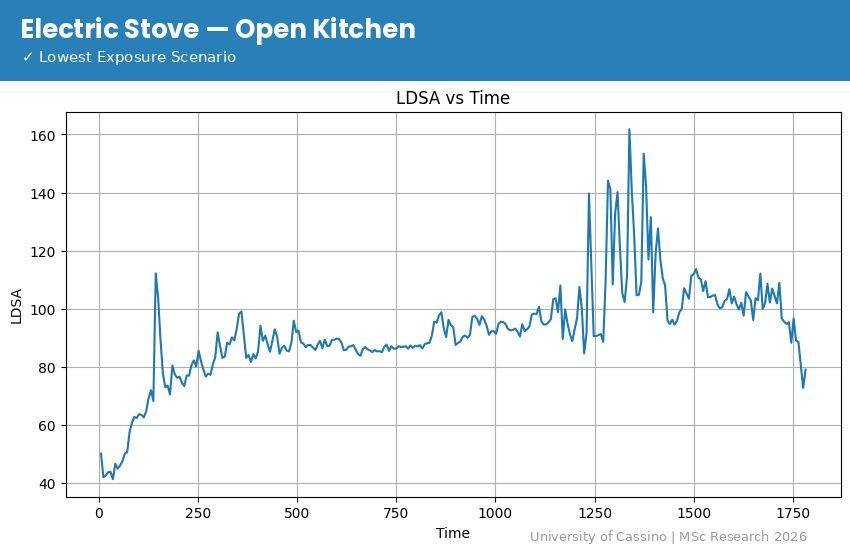
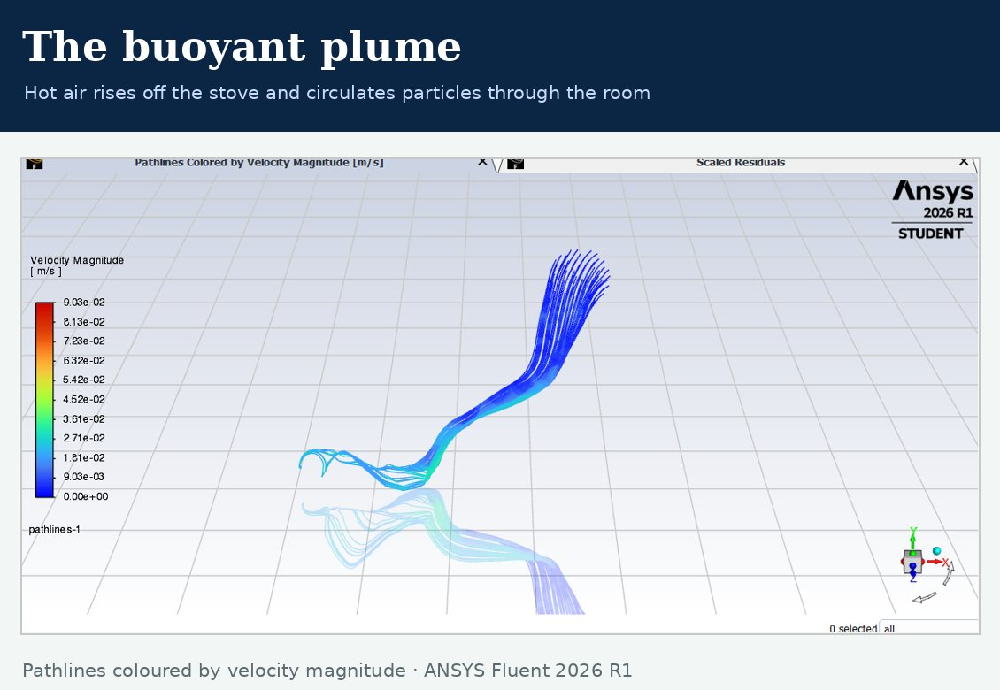
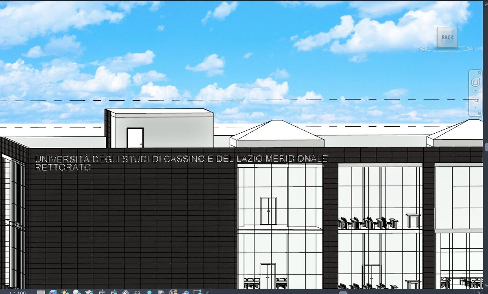
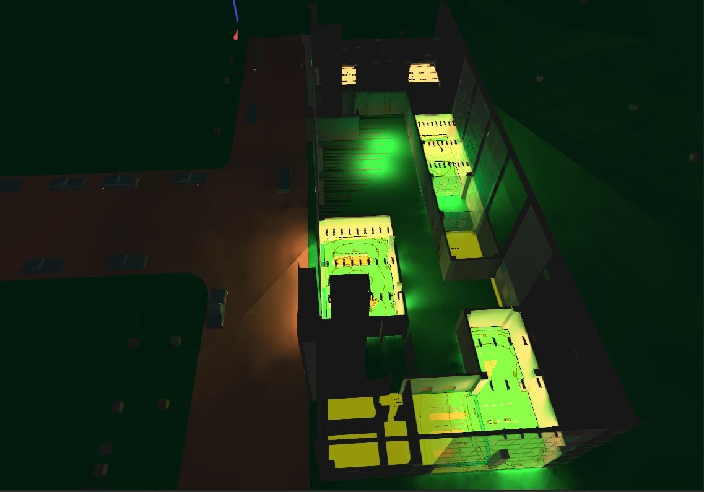
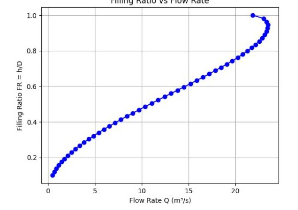
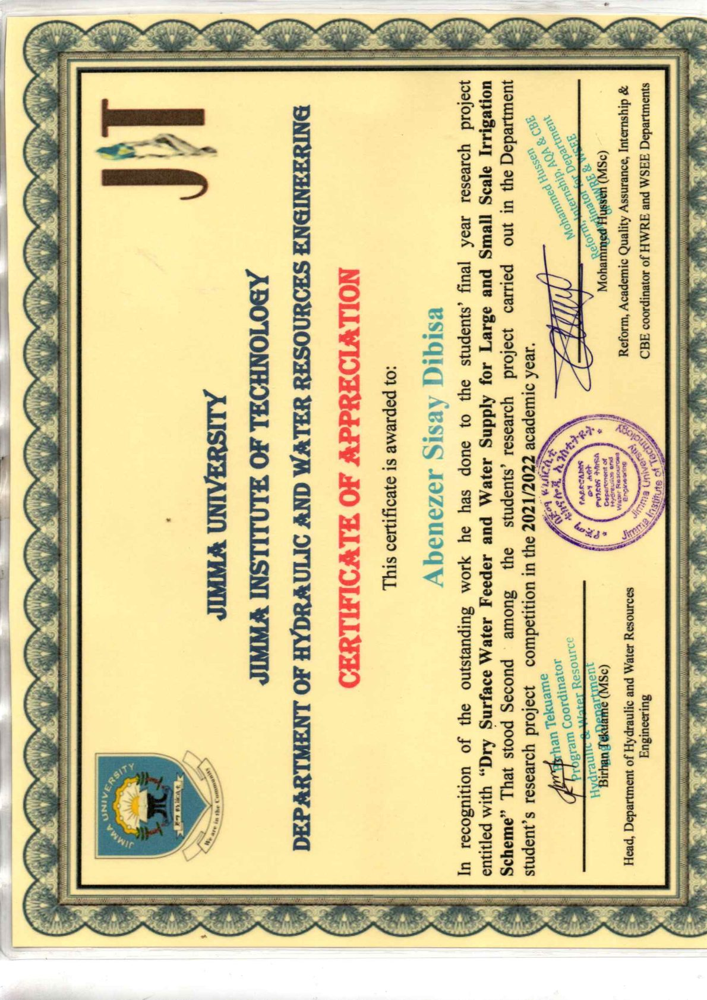
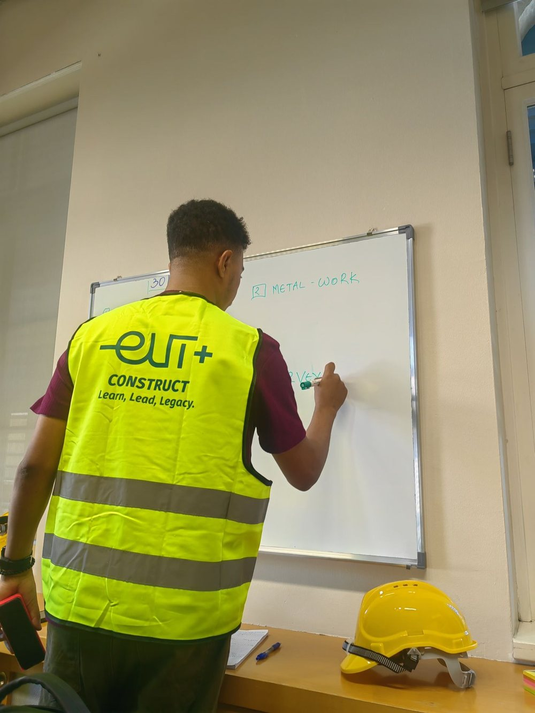

An environmental & civil engineer reading the air inside our buildings — sizing the combustion particles we breathe and the dose they deliver to the lung — at the University of Cassino and Southern Lazio.
I am an environmental and civil engineer who recently completed an MSc in Civil & Environmental Engineering (110/110 cum laude) at the University of Cassino and Southern Lazio, where I worked with Prof. Giorgio Buonanno on the aerosols released by everyday combustion — cooking, heating, candles. The heavy metals and PAHs carried by these particles concentrate in the finest size fractions: exactly the particles that travel deepest into the lung, and that mass metrics like PM2.5 describe poorly.
My thesis pairs size-resolved measurement of combustion aerosol with ICRP respiratory-tract modelling, so exposure is expressed as delivered dose rather than ambient concentration. I complement the measurements with CFD, so I can see how particles actually move through a room. For doctoral work I want to move from characterising sources to controlling them — how ventilation, filtration and source management reshape the size distribution that reaches the lung in real, occupied buildings.
My first degree, in Hydraulics & Water Resources Engineering, still runs underneath everything I do: the same fluid mechanics governs a river channel and a rising thermal plume. Alongside the aerosol work I build BIM models and design with tools like Revit and DIALux.
Size-resolved measurement of combustion particles (ELPI+, Partector 2) combined with ICRP respiratory-tract modelling — turning number and mass distributions into regional deposited dose.
Modelling how buoyant plumes and ventilation carry ultrafine particles through a room in ANSYS Fluent, validated against real instrument data — the physics behind why ventilation matters.
Open-channel hydraulics, IoT-driven irrigation and BIM — the civil-engineering foundation that connects my water-resources background to indoor-environment design.

My master's thesis: size-resolved chemical characterisation of heavy metals and PAHs in indoor combustion aerosol, using ELPI+ and CPC instrumentation combined with ICRP respiratory-tract deposition modelling — so emissions are expressed as the dose actually delivered to each region of the lung. Supervised by Prof. Giorgio Buonanno, defended October 2026 with top honours.

A CFD study in ANSYS Fluent of ultrafine-particle dispersion from an electric stove — a 78 m³ room, ~1M mesh cells, natural convection — validated against my own Partector 2 measurements. The finding: in a closed kitchen the particles don't clear; they become well-mixed and stay elevated.
Measurement and analysis of ultrafine-particle emissions during indoor cooking, comparing gas vs electric stoves and open vs closed kitchens, tracking lung-deposited surface area (LDSA) through each scenario.

A full building-information model of the University of Cassino Rettorato: 3D envelope, structure and coordinated section views produced in Autodesk Revit as part of my BIM coordination work.

A lighting and environmental-comfort simulation modelling illuminance distribution across a building's spaces — linking daylight and artificial lighting to occupant comfort.

A Python/Jupyter tool computing flow area, wetted perimeter, hydraulic radius and discharge for partially filled circular channels via Manning's equation — mapping filling ratio against flow rate.

Design of a sensor-driven, IoT-based automated irrigation and water-supply system for large and small-scale irrigation. Ranked 2nd of all final-year research projects in the department's 2021/22 competition at Jimma University.

As project manager on the Erasmus+ Blended Intensive Programme in Limassol, I led a multicultural team through the design and construction of a student relaxation dome, coordinating tasks, timelines and on-site work.
Design and run combustion-aerosol sampling with an ELPI+ cascade impactor; process raw electrometer data into size-resolved number and mass distributions; apply the ICRP respiratory-tract model to estimate regional deposited dose, and interpret results in terms of particle-bound heavy metals and PAHs.
Led a multicultural student team through the design and construction of a student relaxation dome; coordinated tasks, timelines and on-site work, and presented outcomes to supervisors and stakeholders.
Supported the design of the irrigation scheme fed by the Ajima Chacha embankment dam and took part in site works on the dam and its distribution infrastructure.
I'm open to PhD opportunities, research collaborations and civil / environmental engineering projects in indoor air quality, aerosols, CFD, BIM and water resources. The best way to reach me is by email.
Email me